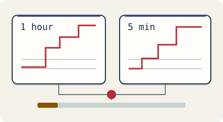

Go deeper · 7 minutes
SLOs and error budgets
Turn a user promise into a budget and an actionable alert.
Open this lesson
The green dashboard nobody trusts
Servers are healthy, but one in fifty checkout attempts times out. CPU is green because requests are waiting on a dependency. Start with an SLI, a measured user outcome: the fraction of eligible checkout attempts that finish successfully within two seconds. An SLO is its target over a named window. Define which attempts count, where they are measured and which failures are excluded before choosing a percentage.
A budget for decisions
Change incident size and length, then inspect time. Compare the error budget consumed with paired fast and slow rolling-window alerts.
Worked example: burn rate
The fast policy requires high burn in both windows. A slower policy can use six hours and thirty minutes at burn above 6. Under steady traffic, six hours at burn 6 spends about 5% of a 30-day budget. These are starting policies under explicit assumptions, not universal thresholds. Measure the user outcome independently of trace sampling.
Two windows must agree
- Allowed failures: 0.1%: A 99.9% SLO defines the denominator.
- Observed failures: 1.44%: 1.44 / 0.1 = 14.4 times burn. One hour spends about 2% of a steady 30-day budget.
- Page only while active: Both the 1-hour and 5-minute windows must exceed the fast threshold.
Make a page worth answering
Give each page an owner, dashboard and runbook. Low traffic can turn a handful of failures into unstable percentages; consider minimum event counts, synthetic checks and user impact. Define important cohorts so a global average cannot hide a critical small population. Review both pages requiring no action and incidents that produced no page. Alert fatigue has a human cost.
A useful page is a decision
- Long AND short: A long window establishes impact. A short window checks it is still happening.
- Fast OR slow: Either paired policy can page the owner. Deduplicate related incidents.
- Recovery stops paging: The short window clears even while the long window still includes old failures.
Key numbers
- Thirty-day requests
- ≈ 2.592 billion. 1,000/s × 86,400 × 30
- Allowed failures
- ≈ 2.592 million. Requests × 0.001
- One-hour fast burn
- ≈ 2% of budget. 14.4 × 1 hour ÷ 720 hours, steady traffic
Check your reasoning
Think through these questions before opening the lesson. In the game you can test the idea and compare your reasoning.
- The fast alert requires burn above 14.4 in both windows. The hour shows 20 and five minutes shows 0.2. Does this rule fire?
- Why is 99.99% not automatically the right target? Follow-up: product says every failure matters.
- A 99.9% SLO sees 0.6% bad requests. What is its burn rate?
- Why use two windows instead of paging on every error spike? Follow-up: could that miss a short severe outage?
- A low-traffic service has ten requests and one failure. Which alert design accounts for the small denominator?
The key point
Choose a measurable user promise, then page when its budget is being spent fast enough to need action.
Practise this idea
- Medium
Notification service
Every other team asks you to send messages: order shipped, new login, a sale starting. You send them by push, email and text through outside providers who have their own limits. Send each message once, and never block the team that asked.
- Hard
Health readings from a wearable
A wearable records health readings even when its phone or cloud service is unavailable. Keep raw readings on the device when possible and upload only consented summaries in sparse batches. The system must not lose locally saved readings during a supported outage, and deleting an account must have a verifiable end-to-end workflow.
- Easy
Status page
When a big service has a problem, millions of people open its status page to see what is happening. The page must stay up exactly when everything else is down, and it must not share a home with the thing it reports on. A few staff update it by hand.
- Hard
Metrics platform
Thousands of services send a stream of measurements: CPU, errors, latency. You store them, draw the dashboards and fire the alerts. The platform watching everyone else must never go down first, and one customer creating millions of new series can ruin the bill.